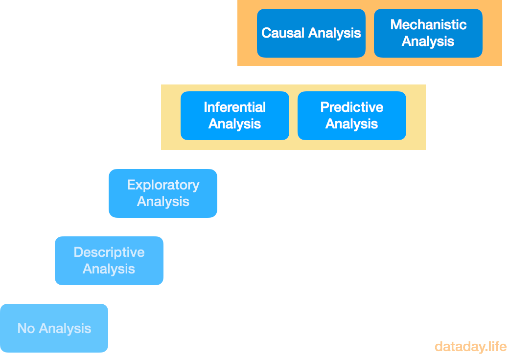
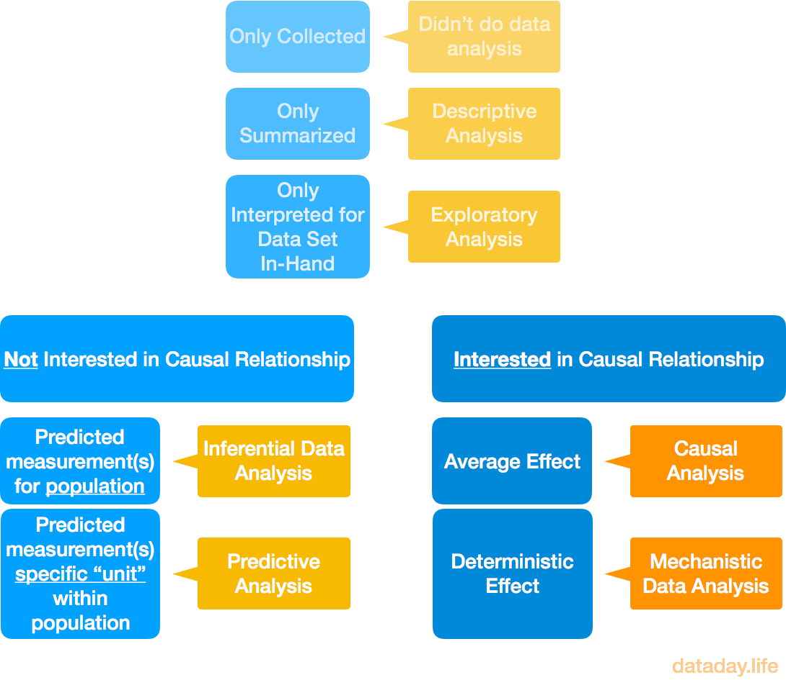

What Types of Data Analysis Are There?
Questions -> Data -> Analysis -> Answers
This flow is what it’s all about, isn’t it? At the end of the day, you want answers so that you can take informed action.
But before you can get answers, you need to do a certain kind of analysis.
But before you do analysis, you need data to perform the analysis on.
But before you bother with data, you typically have one or more questions in mind.
You’re curious about the world, your industry, your process. You make observations and you wonder if doing [something] will impact or change [something else] in a way that would lead to [some goal].
In order to satisfy your curiosity, you collect data in the form of quantitative and qualitative measurements.
The data fuels the possibility for analysis, so that hopefully, you walk away with a more complete picture than you had before (ie, you have answers).
I recently stumbled upon an article in Science Magazine from March 2015 titled, “What is the Question?”. It’s great. It’s a short but insightful article that succinctly summarizes the kinds of analysis that can be done on data.
A video summary is also available at Coursera.
How many kinds of data analysis are there?
There are at least six ways to categorize a particular kind of analysis that you can do on data:
- Descriptive Analysis
- Exploratory Analysis
- Inferential Analysis
- Predictive Analysis
- Causal Analysis
- Mechanistic Analysis

How do I know what kind of analysis I’ve done?
The authors of the referenced article asked the following questions to determine 1) if you’ve done data analysis at all, and 2) if you have, what kind:
“Did you summarize the data?”
“Did you summarize the data?”, they ask? If not, then you didn’t do data analysis.
BUT, if you did summarize the data, then…
“Did you report the summaries without interpretation?”
If you just gave ‘em the numbers and stopped there, you did descriptive analysis.
BUT if you went further and did interpret the results of those summaries, then…
“Did you quanitify whether your discoveries are likely to hold in a new sample?”
Assuming you collected data for a sample (a subset of a population), did you compute anything that would give you any insight into whether or not your discoveries about the data are likely to remain true if you went out and randomly sampled again… and again… and perhaps again? If you didn’t, meaning you were satisfied with making interpretations only about your single sample, you did exploratory analysis.
BUT, if you did calculate some statistics that would allow you to go beyond making interpretations about the data set you have in hand, then…
“Are you trying to figure out how changing the average of one measurement affects another?”
In other words, are you looking for some kind of cause-effect relationship?
If you’re satisfied with making predictions in general, without needing to know the underlying cause of the relationships found in your analysis, then we’re finally at the stage where we can ask one more question:
“Are you trying to predict measurement(s) for the whole population, or for specific individuals within a population?“ If you’re making measurement predictions for an entire population, you’re doing inferential data analysis. That’s what inferential statistics is all about – making estimations about populations based on samples.
If you’re making measurement predictions for specific “units” / individuals, you’re doing predictive analysis.
Now then, if you did want to go beyond general predictions and dig down into the level of causation, then…
“Is the effect you are looking for an average effect or a deterministic effect?”
In other words, when you change one measurement, does it “always and exclusively lead to a specific, deterministic behavior in another?” If so, then you’re doing mechanistic data analysis.
If you’re trying to find out what happens to a measurement on average when another measurement changes, then you’re doing causal analysis
Summarizing the Kinds of Data Analysis

comments powered by Disqus